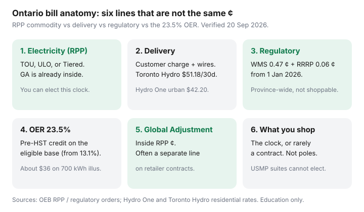

Utilities · Canada
Ontario Electricity Bill Anatomy: Delivery, Regulatory Charges, and the Commodity Line
Ontario households stare at the ¢/kWh on Time-of-Use and miss the line that often pays the poles: delivery. Ontario electricity delivery charges explained properly means reading the whole bill — Electricity (the Regulated Price Plan commodity), Delivery, Regulatory Charges, HST, and the 23.5% Ontario Electricity Rebate — not screenshotting one price from a forum.
This is Ontario bill literacy tied to plan choice, not a generic “how to read a utility bill” post. The clocks themselves live in TOU vs ULO vs Tiered. The official comparison workflow is in how to use the OEB bill calculator. If a salesperson is selling a contract ¢, start at retailer vs utility rates.
Disclosure: There is no natural affiliate product in a bill-anatomy explainer. Saving Optimizer does not claim OEB, LDC, or retailer partnerships. This is education — not a rate quote or legal advice.
Key takeaways
- The OEB’s Electricity line (TOU, ULO, or Tiered) is the commodity. Delivery, regulatory charges, and the monthly service charge stay with your local distribution company (LDC). Switching plans does not shop delivery away.
- RPP commodity in force 1 Nov 2025–31 Oct 2026: TOU 9.8 / 15.7 / 20.3 ¢; ULO overnight 3.9 ¢ and weekday 4–9 p.m. 39.1 ¢; Tiered 12.0 then 14.2 ¢. Those ¢ already include Global Adjustment for RPP customers.
- Toronto Hydro’s residential customer charge is $51.18 / 30 days (OEB rate order, 1 Jan 2026). Hydro One urban year-round is $42.20 / month as of 1 Jul 2026 — rural densities print higher service charges before protection credits.
- The 23.5% OER (from 13.1% on 1 Nov 2025) is a pre-HST credit on Electricity + Delivery + Regulatory. The OEB’s typical 700 kWh illustration is about $36 / month off — not your file.
- You can shop the RPP clock (free election) or, rarely, a retailer contract. You cannot shop Hydro One’s poles or Toronto Hydro’s customer charge. A condo on a unit sub-meter is a different bill.
Commodity (RPP) vs delivery vs regulatory line items
Ontario licensed distributors print the same four blocks, even when the PDF looks different. Hydro One’s residential rates page is blunt: Electricity, Delivery, Regulatory Charges, and HST. Extra lines (late fees, specific service charges) sit outside the rebate math.
| Line | What it is | Can you change it? |
|---|---|---|
| Electricity (commodity) | RPP TOU, ULO, or Tiered. Global Adjustment is already inside those ¢ for RPP customers. | Yes — free Customer Choice election, if you are not on a retailer contract or a unit sub-meter. |
| Delivery | Monthly service / customer charge, distribution, transmission, line-loss adjustments, and OEB-approved riders. | No. You cannot elect a cheaper pole company. |
| Regulatory charges | From 1 Jan 2026: Wholesale Market Service (Class B total 0.47 ¢/kWh including CBR) and Rural or Remote Rate Protection 0.06 ¢/kWh. Many bills also show a $0.25 standard-supply admin charge. | No. OEB province-wide charges, billed by every LDC. |
| Ontario Electricity Rebate | 23.5% of the eligible pre-HST base (Electricity + Delivery + Regulatory). Not HST itself. | Switching TOU/ULO/Tiered does not drop OER on an eligible RPP bill. |
Labelled sketch, not a quote: 750 kWh of winter TOU commodity at a blended 12 ¢ is about $90 of Electricity. A $42–$51 customer charge plus transmission and riders can match or beat that before OER. That is why a neighbour’s “ULO saved me 2 ¢” story can be a $4 year after delivery.

Why delivery can dwarf commodity savings from plan switching
Customer Choice only edits the Electricity line. Delivery is local. Toronto Hydro’s OEB-approved 1 Jan 2026 residential customer charge is $51.18 per 30 days, plus transmission (network 1.346 ¢ and line-and-transformation 0.895 ¢ per kWh on that rate order) and a handful of riders. Hydro One, effective 1 Jul 2026, posts urban year-round $42.20 / month, medium-density $72.06, and low-density $85.46 before Distribution Rate Protection (base distribution capped at $44.47 / month for eligible medium- and low-density year-round homes) and the $60.50 Rural and Remote Rate Protection credit on eligible low-density year-round accounts.
Those fixed dollars do not care that you moved the dryer to 11 p.m. A $60 annual ULO win on commodity is real — and still smaller than one month of a Toronto Hydro customer charge. Run the OEB calculator on the all-in total, not a napkin ¢ comparison.
Hydro One’s own 750 kWh urban illustration for the 1 Jul 2026 delivery change is a −$0.16 monthly bill movement. The lesson is not “delivery is cheap.” The lesson is that delivery is sticky. Year-to-year delivery tweaks of a dollar or two are not the same problem as chasing a 39.1 ¢ dinner hour.
Ontario Electricity Rebate: where it appears and what it offsets
Hydro One and the OEB RPP backgrounder (17 Oct 2025) describe the same change: OER moved from 13.1% to 23.5% on 1 November 2025 (O. Reg. 363/16). It prints as a pre-tax credit near the bottom. The eligible base is Electricity + Delivery + Regulatory. Late-payment and disconnection charges are out.
- The OEB’s typical 700 kWh household illustration is about $36 / month off. Toronto Hydro’s consumer page describes the same percentage on most residential, farm, and many small-business bills.
- Because OER is a percentage, a plan that raises the pre-rebate total also raises the credit — and can still leave you paying more. Compare net dollars.
- A first bill that straddles 1 Nov 2025 was pro-rated (13.1% on September/October days, 23.5% after). By late 2026 that is history; do not average an old PDF into a new election.
OER applies to eligible RPP bills on all three clocks. You do not lose the rebate by choosing ULO. Retailer-contract bills are a different product; do not assume the same credit math.
Global Adjustment context at a household-friendly level
Global Adjustment (GA) is the province’s way of paying for contracted generation, conservation programs, and some nuclear/gas commitments that the wholesale market price does not cover. For RPP customers, the OEB folds a forecast of GA into TOU, ULO, and Tiered. You do not see a separate GA line on a normal utility RPP bill.
If you signed an electricity retailer contract, you left RPP. The contract ¢ is only the commodity the retailer sold you. GA usually appears as its own line, and it moves. A “fixed 8.5 ¢” pitch that ignores GA is how people pay more than the neighbour on TOU. The OEB’s retailer-comparison calculator exists for that comparison; the Customer Choice calculator does not.
Class B GA rate riders on delivery tariffs (Toronto Hydro’s 2026 non-RPP GA rider is 0.508 ¢/kWh on that order) are not your RPP problem. If that rider is on your bill, you are not on RPP — stop and read the retailer framework.
How to read Toronto Hydro / Hydro One / Hydro Ottawa bill layouts
The labels differ; the job is the same. Find four things: the Electricity block (with TOU/ULO bands or Tiered kWh), the Delivery block (customer/service charge first), Regulatory Charges, and the OER credit. Then find the account class — urban vs medium vs low density on Hydro One sits under the amount owing on page 2.
- Toronto Hydro. Residential rates page lists the $51.18 customer charge and the 1 Jan 2026 delivery change. Usage graphs in My Account split TOU/ULO bands. Customer Choice is a portal item, not a sticker on the bill.
- Hydro One. Delivery is density-class specific. Distribution Rate Protection and the $60.50 rural credit are why two cottages on the same road can print different service charges. Line-loss factors (urban 1.057, medium 1.076, low 1.105 as of 1 Jul 2026) quietly multiply some kWh-based lines.
- Hydro Ottawa (and Alectra, and the rest). Same four blocks, local customer charge. Search “[your LDC] understanding your bill.” Do not paste a Toronto Hydro $51.18 onto an Ottawa PDF.
Condo catch: if a unit sub-meter provider prints the bill, you generally cannot elect a plan. That choice sits with the building’s principal consumer. The anatomy still helps you argue about usage — it does not file an election.
What you can and cannot shop around for in Ontario
Ontario is not Alberta. Most households buy commodity from the utility at RPP. Fewer than one in ten buy from an electricity retailer. You can:
- Elect TOU, ULO, or Tiered for free if you are RPP, smart-metered, and not USMP-billed. Paperwork is in the election checklist.
- Use less — air sealing, the attic, and a thermostat you will actually program still beat a 1 ¢ clock argument. Start at cut home energy costs.
- Enrol in a demand-response credit such as Peak Perks. That is not a plan switch.
You cannot shop the LDC, the WMS/RRRP regulatory ¢, or HST. Door-to-door “we’ll beat Hydro” pitches are selling a contract, not delivery. If the honest annual gap on the OEB calculator is smaller than one dinner out, stay put and seal the hatch.
Sources & date stamps
- OEB, Electricity rates / RPP — TOU 9.8 / 15.7 / 20.3 ¢; ULO 3.9 and 39.1 ¢; Tiered 12.0 / 14.2 ¢ (1 Nov 2025–31 Oct 2026). Used 20 Sep 2026.
- OEB RPP backgrounder, 17 Oct 2025 — OER to 23.5%; typical 700 kWh illustration (~$36 / month).
- O. Reg. 363/16 — Ontario Electricity Rebate as a pre-tax credit on the eligible base.
- Hydro One, How electricity gets priced / residential rates — four bill blocks; OER 23.5% from 13.1%; 1 Jul 2026 urban $42.20 service charge; DRP $44.47; RRRP credit $60.50.
- Toronto Hydro, Residential rates — $51.18 / 30 days customer charge; 1 Jan 2026 delivery changes (OEB EB rate order).
- OEB Decision and Order, regulatory charges effective 1 Jan 2026 — WMS+CBR $0.0047/kWh; RRRP $0.0006/kWh.
- OEB, Understanding your electricity bill / energy contracts — GA inside RPP ¢; separate GA on many retailer bills.
Frequently asked questions
Do Ontario electricity delivery charges change if I switch to Ultra-Low Overnight?
No. Customer Choice only edits the Electricity commodity line. Delivery, the monthly service charge, and regulatory charges stay with your LDC. The 23.5% OER still applies to eligible RPP bills.
Why is my Hydro One delivery higher than a Toronto friend’s?
Different LDCs, different density classes. Hydro One medium- and low-density service charges start higher; eligible year-round homes get Distribution Rate Protection and, on low density, a $60.50 rural credit. Compare your rate class on page 2, not a Facebook ¢.
Is Global Adjustment extra on my Toronto Hydro RPP bill?
Not as its own line. For RPP customers the OEB already folds a GA forecast into TOU, ULO, and Tiered. A separate GA line usually means a retailer contract or a non-RPP class.
Does the 23.5% Ontario Electricity Rebate apply to delivery?
Yes, on the eligible pre-HST base: Electricity + Delivery + Regulatory. It does not apply to late fees or disconnection charges. Switching plans does not cancel OER.
Can I shop for a cheaper delivery company in Ontario?
No. Your LDC is assigned by territory. You can elect an RPP clock or cancel a retailer contract and return to RPP. You cannot pick Hydro Ottawa’s poles from a Toronto address.